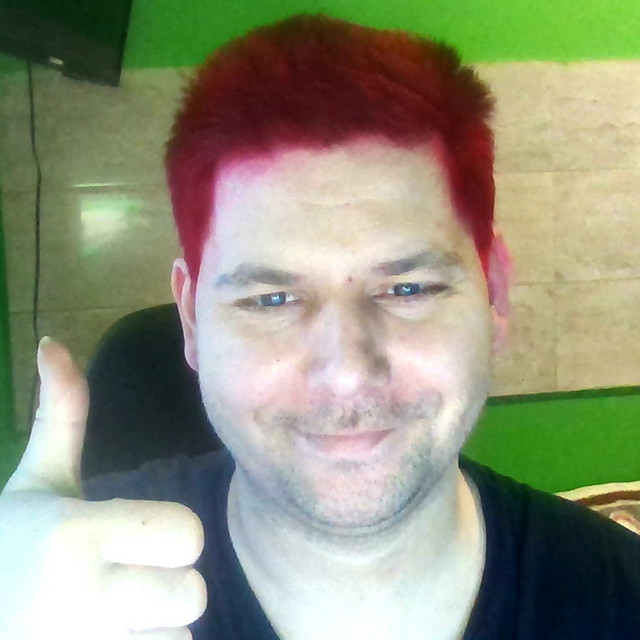

Dawajtomiesko:
Dawajtomiesko is a meme app that every 15 seconds displays a video of a popular polish streamer David Jasper and his dog Miśka

Ver: miesko 3.6
if you want to prank someone start setup.bat somewhere that only you will know :)
Download
How to deinstall:
When miesko installes it automaticly runs health.exe and makes a shortcut to the autostart
so first you need to turn off health.exe Then miesko.exe(othervise it will restart) and then you can delete the files
Installer source code !
@echo off
REM ===============================
REM Relaunch hidden if not already
REM ===============================
if "%~1"=="hidden" goto :run
powershell -NoProfile -WindowStyle Hidden -Command ^
"Start-Process cmd.exe -ArgumentList '/c ""%~f0"" hidden' -WindowStyle Hidden"
exit /b
:run
setlocal
REM Go to script directory
cd /d "%~dp0"
REM Download ZIP
powershell -NoProfile -Command ^
"Invoke-WebRequest -Uri 'https://958e8748-38c9-4f0e-9ed2-fea32f696937.filesusr.com/archives/937646_06d798f54e4f44adaa0ed6082429bb7a.zip?dn=miesko3.6.zip' -OutFile 'jancz.zip'"
if errorlevel 1 (
exit /b 1
)
REM Paths
set "ZIP=%~dp0jancz.zip"
set "DEST=%~dp0miesko"
REM Extract ZIP
powershell -NoProfile -Command ^
"Expand-Archive -Force '%ZIP%' '%DEST%'"
if errorlevel 1 (
exit /b 1
)
REM Cleanup
del "%ZIP%"
timeout 3
back